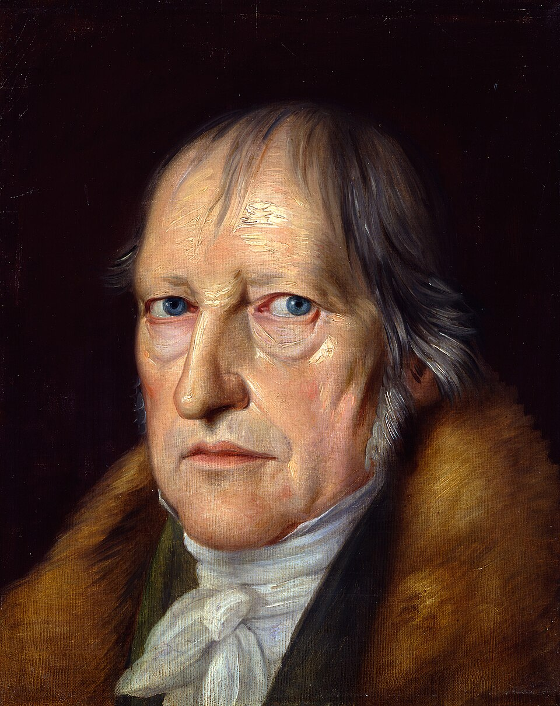

For a known, differentiable function, we can find the slope of the function at any point using calculus. This can be used to find important landmarks
If you can find the slope at any point, you can climb without seeing the whole mountain.
Move a little in the direction of the derivative. \(\alpha\) is how bold that step is: too small and you crawl, too large and you overshoot.
\[x \leftarrow x + \alpha\, f'(x)\]
Ascent stops when the slope is flat. Calculus already told you that landmark might be a local maximum.
In higher dimensions the slope is the gradient: a vector of partial derivatives.
\[\theta \leftarrow \theta + \alpha\, \nabla J(\theta)\]
No derivative, no map of the mountain. Keep one candidate. Tweak it. Move only if the tweak is better.
\[x \leftarrow x'\]
\[\text{if} \quad f(x') > f(x)\]
Larger steps wander farther. More samples squeeze more from the same neighbourhood.
Accepting a worse neighbour is a way to escape local maxima.
"Sometimes accept a worse outcome".
"Stalled in life? Run away!"
One climber can stall on a ridge. Several packs can leave in different directions and close in on different peaks.
A generalisation of hill climb
Eight independent spins, or one spin and evenly spaced pointers.
Pick two, keep the fitter. Repeat until eight.
One cut, two cuts, or a per-bit swap mask.
Blend two 2D parents: \(\alpha A + (1-\alpha)B\). Outside the segment, \(\alpha\) extrapolates.
Nudge a real number by a Gaussian step of width \(\sigma^2\).
Step adds, drops, or rewrites a leaf. The expression at the bottom is the tree.

The human spirit, memetic diversity, love, and the search for the global optimum (which may or may not exist).